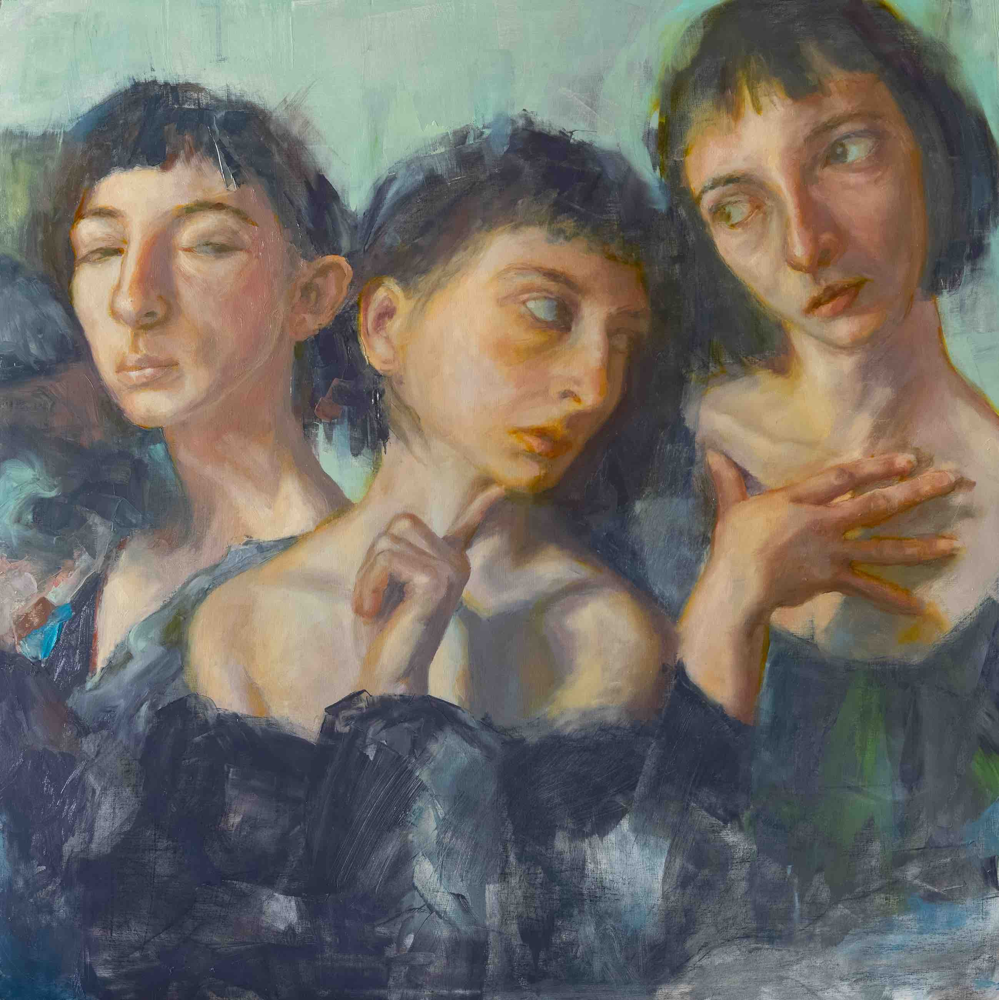

<br>
<h4>Loni Stark</h4>
<div class="bio">
<p>Thomas Edison once said, "Vision without execution is hallucination."</p>
<p>... and the creation of art, utilitarian stuff, and the self necessitates both. I'm drawn towards the exploration of ideas and patterns between seemingly unrelated areas in pursuit of new possibilities. </p>
<p>As a student, I am pursuing a Masters at Harvard Extension School in psychology and exploring a life-long fascination in self-aspect creation as a pathway to greater self-complexity and wellness. As an artist, my interest mainly lies in figurative oil paintings that explore the human psyche rather than surface aesthetics. As a product leader, I endeavor to build innovative solutions to problems. </p>
<p>I believe that achieving mastery is not a linear process but a continual cycle between control and chaos. </p>
<p>Instagram: <a href="https://www.instagram.com/lonistark/">@lonistark</a> (art)</p>
<p>Twitter: <a href="https://www.twitter.com/lonistark/">@lonistark</a> (tech)</p>
</div>

<figcaption>"Really? Why? Should I?" by Loni Stark 2021. Oil on wood panel. 30"x30"</figcaption>